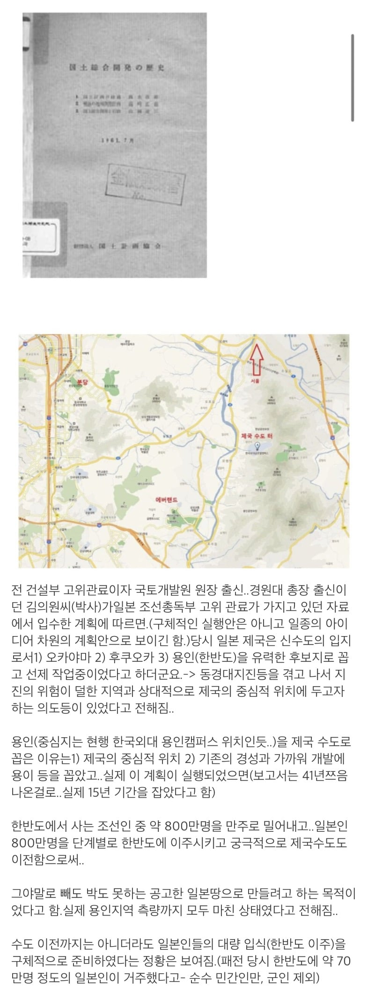

일제시대 한반도로 수도 천도 계획
댓글
어차피 일뽕들은 해당 없는 이야기긴 하지... 열차 화물칸에 짐짝 실어나르듯이 패대기쳐져서는 저기 허허벌판 늪지대랑 황무지밖에 없는 만주땅에 유기당해서 방치플레이당하. 흙집짓고 살다가 겨울을 버티지 못하고 얼어죽음.
일뽕들은 그런거 생각 못하고 자신이 일본어 마스터하며 평범한 일본인으로 살아갔을거라고 생각함
만주에서 칼을 갈던 조선인들이 독립전쟁을 일으키고 한반도 수복하면 만반도판도 낼름이네?
아이누나 류큐인 생각하면 이렇게됐을듯...
밀려나는 800만명에 해당돼서 중국땅 친다고 하네요
비추가 추천보다 많네 ㄷㄷ 개드립 일뽕드립넷이였나
몰랐음?
음습해서 반박은 못하고 비추만 오지게 달림
훗카이도 오키나와도 만주쪽 합병하면 경제적 정치적으로 이득 많이 봤으니 저럴만 하지 패전후에도 역사드립치면서 끝까지 한반도는 포기 안하려 했으니 본토 인구압 감소 시키고 시장규모 키우면서 소련 중국 전선을 최대한 멀리 둘수 있다는 점에서 한반도 먹는게 개 꿀이었음 제들 입장에서는
저거 실행했으면 핵이 한반도에 떨어지는거 아니냐 다행인데
대지진이 어지간히 트라우마가 되었나보네
식민지 영토로 수도이전 생각한거보면
산 꼭대기에 터를 잡겠다는겨?
저기다가 황궁 만들어놨으면 쟤네도 태재고개 넘어가다가 교통정체 걸려서 존나 욕했겠네
일본 애니 보다 보면 주인공이 이름없는 사람들에게 이름만들어 주자나 ;;;
창씨개명할때 일본인들이 한국인에게 일본이름을 주면 이제
너의들도 우리같은 일본인이 된거야 내선일체 라고
1억 총 옥쇄에 1억에 포함될수 있는 권리를 줄께 ~ 라고 생각한것 같더라고
더 어처구니 없는것은 창씨 개명할때 가장 반대 한 사람들이 조선인들 보다
일본의 하층민이 더 반대 했다고 ㅋㅋㅋ
고려때 왕건이 지방 호족들한테 왕씨 성 하사한다던가
당나라때 거란족 추장들한테 중국 스타일 이름 하사한다던가
성, 이름을 주는건 동아시아의 유구한 전통이지
서양도 이랬는진 모르겠지만
지진도 안나고 좋지 한반도
잉 좋지
근데 철도도 강도 없는데 저기서 살만한건가? 그냥 페이퍼플랜일듯
의병 800만명 ㅅㄱ
천도하고 도시 인프라 싹 정비 다 해둔 직후에 독립했으면 개이득 아니었을까?
지금도 일제시대에 깔아놓은 철도는 요긴하게 쓰고 있으니
북한 : 안녕하세요
종로 용산 땅이 진짜 레어땅인듯 튼튼 그자체
저렇게 됬으면 일뽕들은 태어나지도 못했음 부모세대때 전멸이라 ㅋㅋㅋ
일뽕들 땅을 치며 안타까워 하다